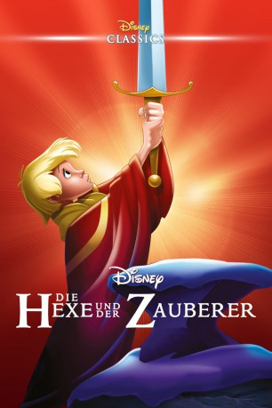

Auszeichnungen: für 1 Oscars nominiert
 gesehen am 12.09.2018
gesehen am 12.09.2018Alternativ: The Sword in the Stone
Auszeichnungen: für 1 Oscars nominiert gesehen am 12.09.2018
 
 IMDB-Wertung: 7.2 / 10
IMDB-Wertung: 7.2 / 10  Metascore:
Metascore: 
Ein Land ohne König, ein ungewöhnliches Schwert und eine geheimnisvolle Vorsehung - in diesen Zeiten lebt der junge unbeschwerte Ritterknecht Floh auf der Burg seines Stiefvaters Sir Hector. Allein der gute Zauberer Merlin erkennt, daß Floh zu Höherem bestimmt ist und weiht ihn auf äußerst ungewöhnliche Weise in die Geheimnisse des Lebens ein. Zusammen erleben sie als Fische, Eichhörnchen und Vögel die tollsten und spannendsten Abenteuer, deren Höhepunkt ein Zauber-Wettstreit mit der bösen Hexe Madame Mim ist. Sieg oder Niederlage entscheiden über das Schicksal des Jungen, und damit über das des ganzen Landes... Walt Disneys zauberhafte Interpretation der König Arthurs Sage ist ein Erlebnis für die ganze Familie!
Jahr: 1963
Dauer: 79 Minuten
FSK: 0
Land: USA Studio: Buena Vista DISTRIBUTION CO., INC.Tonspuren: DTS - ,
Untertitel: Deutsch,
Auflösung: 1080p (1888x1080) Größe: 6092 MB
Genre: Komödie, Abenteuer, Fantasy, Animation/Trick, Familie, Musical
Regisseur: Wolfgang Reitherman
Drehbuch: Bill Peet
Soundtrack: George Bruns
Darsteller:
 Karl Swenson als Merlin
Karl Swenson als Merlin Tudor Owen als Knight in Crowd (uncredited)
Tudor Owen als Knight in Crowd (uncredited)Datei: X:\Kinder Disney HD\1900-1999\Hexe und der Zauberer, Die (1963, FSK0, 1888x1080).mkv seit 24.04.2018
Festplatte: Kinder-Filme+Trick
 Es gibt insgesamt 16 Filme in der Gruppe 'Kinder Disney HD\1900-1999'
Es gibt insgesamt 16 Filme in der Gruppe 'Kinder Disney HD\1900-1999'